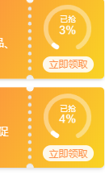
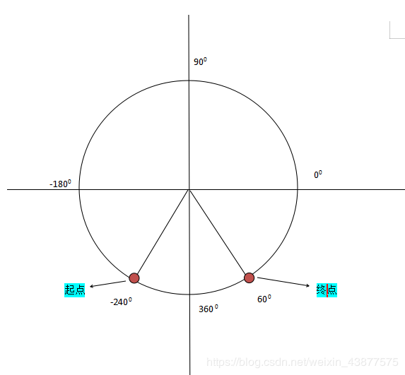

参照网上的一个案例“参照的为绘制的是一个动态的圆环”，现在我的需求是改编成四分之三的圆环
实现效果：

样式展示 canvas绘图基本操作设置就可以
参考源代码链接：原文：https://blog.csdn.net/qq_21058391/article/details/76691047
> 引用的上文源代码进行修改，注意几点
1. 理解绘制圆环的原理，是根据弧度进行绘制
2. 弧度的计算公式
3. 每一角度转换成弧度
4. 起点和终点的坐标
> 自己画个图，方便理解!

首先根据图可以看到起点和重点，看坐标知道起点是-240度，这个正负还是要区分的，每一弧度的计算公式
将角度转换为弧度：
var radians = degrees * (Math.PI/180);
这样就可以进行改版了
改版之后的代码
`drawMain(drawing_elem, percent, forecolor, bgcolor,fillColor) {
/*
@drawing_elem: 绘制对象
@percent：绘制圆环百分比, 范围[0, 100]
@forecolor: 绘制圆环的前景色，颜色代码
@bgcolor: 绘制圆环的背景色，颜色代码
*/
var context = drawing_elem.getContext('2d')
var center_x = drawing_elem.width / 2;
var center_y = drawing_elem.height / 2;
var rad = Math.PI/3*5/100; //绘制的为300度的圆
// 65 * Math.PI / 180, 115 * Math.PI / 180
// var speed = 0;
// 绘制背景圆圈
function backgroundCircle(){
context.save();
context.beginPath();
context.lineWidth = 8; //设置线宽
var radius = center_x - context.lineWidth;
context.lineCap = "round";
context.strokeStyle = bgcolor;
context.arc(center_x, center_y, radius,-Math.PI/180*240, Math.PI/180*60, false);
**起点，终点，半径，开始点，结束点，是否顺/逆时针**
context.stroke();
context.closePath();
context.restore();
}
//绘制运动圆环
function foregroundCircle(n){
context.save();
context.strokeStyle = forecolor;
context.lineWidth = 8;
context.lineCap = "round";
var radius = center_x - context.lineWidth;
// console.log(endAngle)
context.beginPath();
context.arc(center_x, center_y, radius ,-Math.PI/180*240 ,-Math.PI/180*240+n*rad , false); //用于绘制圆弧context.arc(x坐标，y坐标，半径，起始角度，终止角度，顺时针/逆时针)
context.stroke();
context.closePath();
context.restore();
}
//绘制文字
function text(n){
context.save(); //save和restore可以保证样式属性只运用于该段canvas元素
context.fillStyle = fillColor;
var font_size = 20;
context.font = font_size + "px Helvetica";
var text_width = context.measureText(n.toFixed(0)+"%").width;
context.fillText(n.toFixed(0)+"%", center_x-text_width/2, center_y + font_size/2);
context.restore();
}
//执行动画
(function drawFrame(){
// 去掉动画加载效果
// window.requestAnimationFrame(drawFrame);
// context.clearRect(0, 0, drawing_elem.width, drawing_elem.height);
backgroundCircle();
text(percent);
foregroundCircle(percent);
**// 去掉动画加载效果，这两行代码，由于网速加载慢的时候绘制的比较慢，动态效果绘制的太缓慢，所以去掉了**
// if(speed >= percent) return;
// speed += 1;
}());
},
接下来就是调用该方法了，调用的时候放到了nextTick中，当时遇到的问题就是加载只能加载第一个，下面的加载不出来，自我感觉加载顺序的问题，绘制了但是没渲染出来
this.$nextTick(()=>{
for(var i =0;i<this.couponCenterLists.length;i++) {
this.childrenTag = document.getElementById("time-graph-canvas"+i);
let score = this.couponCenterLists[i].couponPercentage * 100;
this.drawMain(this.childrenTag, score, "#fff", "rgba(255,255,255,0.4)","#fff");
**score变量是我从接口取出来的数据存到了score变量中**
}
})
基本就那么多，理解绘制的起点终点和计算方法感觉就不难了
————————————————
转自：CSDN博主「weixin_43877575」的原创文章 原文链接：https://blog.csdn.net/weixin_43877575/article/details/84652961